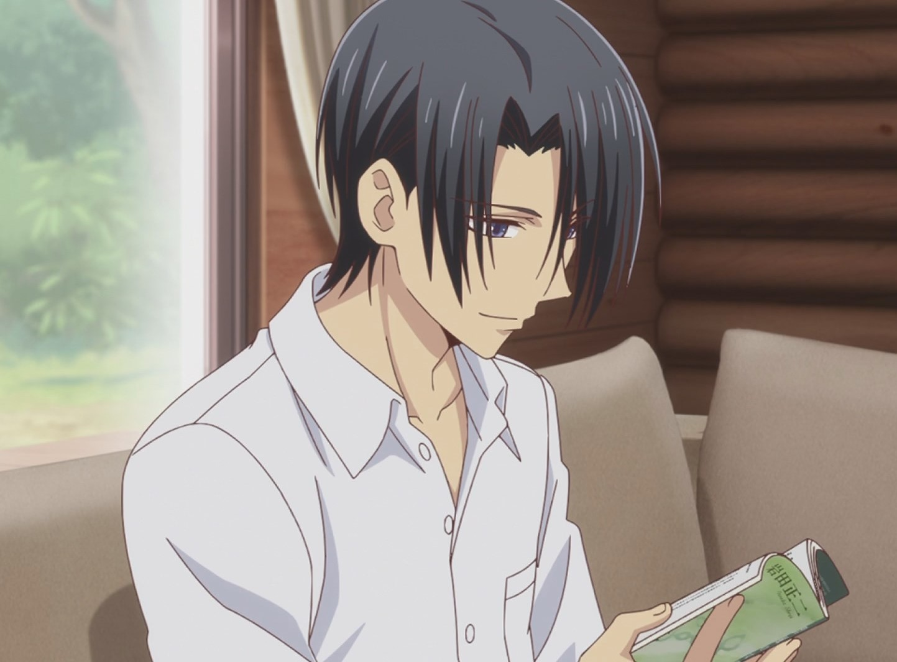
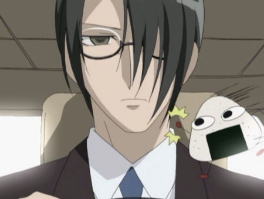
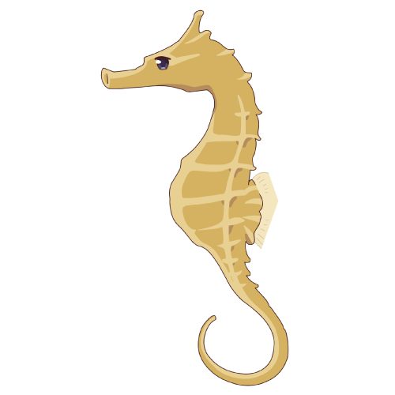

|
Age:26-28 Hair color: Black Eye color: Purple He is the dragon of the chinese zodiac. When he is hugged by the opposite sex he does not turn into his actually zodiac form. He actually turns into a seahorse. He is know as the Sohma family's personal doctor. He was engaged to a girl named Kana, but an incident happened between the couple and the head of the family. He ended up losing sight in his left eye and eventually had to erace Kana's memories. Erasing people's memory is a trait that only the dragon of the zodiac has. He is also part of the Mabudachi Trio, along side Shigure Sohma and Ayame Sohma. |
 |
|  | The Dragon (AKA The Seahorse)  |